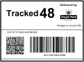

Witamy w Thyia, właśnie podejmujesz ważny krok w kierunku proaktywnej opieki zdrowotnej, wygodnie z własnego domu. Evalyn Brush, innowacyjne urządzenie do samodzielnego testowania, zostało zaprojektowane tak, aby ten proces był jak najprostszy i jak najbardziej uspokajający.
Zanim rozpoczniesz test, upewnij się, że masz następujące elementy:
Wymazówka

Instrukcje
Etykieta
Samodzielne wykonanie w dogodnym dla Ciebie czasie: Przeprowadź test we własnym tempie, w swoim własnym miejscu. Nie ma potrzeby umawiania się na wizyty ani oczekiwania w poczekalni.
Delikatny i bezbolesny: Evalyn Brush umożliwia prostą, bezbolesną procedurę przesiewową.
Sterylne i bezpieczne: Evalyn Brush jest starannie sterylizowana, zapewniając bezpieczeństwo podczas użycia.
Dokładne i niezawodne: Twoja próbka zostanie przeanalizowana przez profesjonalne laboratoria, oferując kompleksowe testy na HPV i inne infekcje.
Obejrzyj instrukcje wideo, które towarzyszą Ci podczas pobierania próbki.

Krok pierwszy
Dokładnie umyj ręce przed otwarciem wymazówki i pobraniem próbki.

Krok drugi
Odklej wieczko i otwórz wymazówkę. Chwyć wymazówkę za trzon. Upewnij się, że zachowasz opakowanie, ponieważ będziesz go potrzebować, gdy będziesz odsyłać wymazówkę do testów.

Krok trzeci
Zsuń wieczko, delikatnie naciskając boki nakrętki, powinno się zsunąć. Upewnij się, że nie dotykasz białej szczoteczki. Trzymaj wieczko w pobliżu, aby później zamknąć wymazówkę.

Krok czwarty
Teraz włóż wymazówkę do pochwy, aż skrzydełka dotkną warg sromowych. Delikatnie wciśnij różowy tłok, aż usłyszysz kliknięcie.

Krok piąty
Zbierz próbkę, obracając tłok pięć razy, słysząc kliknięcie przy każdym obrocie. To takie proste jak obróć i kliknij.

Krok szósty
Usuń wymazówkę, trzymając obudowę jedną ręką. Pociągnij tłok, aby schować białą szczoteczkę. Ponownie zamocuj wieczko, aż usłyszysz kliknięcie, aby chronić próbkę podczas wysyłki.

Krok siódmy
Włóż szczoteczkę z powrotem do oryginalnego opakowania. Jeśli zarejestrowałaś swój test offline, włóż ten formularz do pudełka z wymazówką, gotową do wysłania do laboratorium.

Krok ósmy
Gdy wszystko jest bezpiecznie w środku, odklej taśmę klejącą, zamknij pudełko i dobrze je zabezpiecz. Naklej etykietę zwrotną na tylną stronę, zakrywając oryginalną etykietę.

Krok dziewiąty
Zwróć zamknięte pudełko do dowolnej skrzynki pocztowej lub urzędu pocztowego w pobliżu. Twoja próbka jest śledzona przez Royal Mail Tracked®, więc wiemy, kiedy jest w drodze do nas.
Ten test nie może stwierdzić, czy masz raka. Może wykryć obecność wysokiego ryzyka HPV, głównej przyczyny rozwoju raka szyjki macicy.
W przypadku jakichkolwiek skutków ubocznych lub objawów, np. plamienia, bólu lub wydzieliny po użyciu tego urządzenia, skonsultuj się z lekarzem.
Nie używaj, jeśli masz mniej niż 18 lat.

Nie używaj tego podczas menstruacji.
Nie używaj tego w czasie ciąży ani przez 3 miesiące po ciąży.

Nie używaj tego, jeśli opakowanie wymazówki jest uszkodzone lub przeterminowane.
Nie używaj innych produktów dopochwowych, z wyjątkiem prezerwatyw, środków antykoncepcyjnych i lubrykantów na bazie wody, 48 godzin przed testem.

Nie używaj ponownie tego urządzenia, wielokrotne użycie może powodować infekcję i/lub wpłynąć na diagnozę.
Jeśli musisz zgłosić uszkodzone lub niesprawne urządzenie lub potrzebujesz dodatkowego wsparcia przy swoim urządzeniu, skontaktuj się z nami jak najszybciej.